Jumping and moving
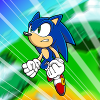
The playable character (like Sonic) jumps automatically by spinning in a ball, and they stop spinning when he falls.
Move the character left or right by tilting your device to make the character land on platforms.


The playable character (like Sonic) jumps automatically by spinning in a ball, and they stop spinning when he falls.
Move the character left or right by tilting your device to make the character land on platforms.
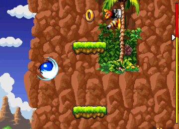
You can also perform a double jump by touching the screen. Perform a double jump at the highest point of the initial jump to jump higher and reach higher platforms.
Each playable character has their own Super Jump ability. Check out the different character tips to learn more.
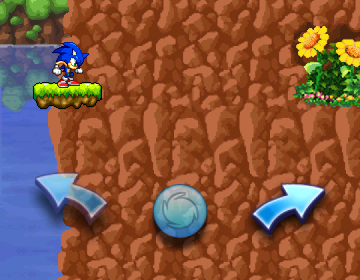
If you have turned ON the VIRTUAL PAD option, you will control the character by pressing one of the available icons at the bottom of the screen.
The arrows make the character moving, whereas the "select" icon makes the character perform a double jump.
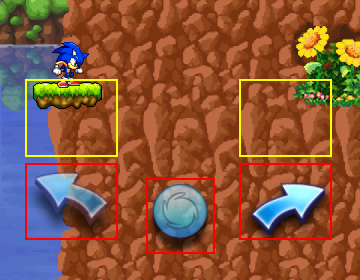
Additionally, there are hidden buttons on top of the arrows to move left or right and perform a double jump at the same time.
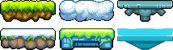
The platforms allow you to jump on. Jump on higher platforms to reach the top of the stage.
There are multiple types of platforms in the game and some of them can move from left to right.
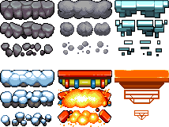
Some platforms may be fragile. When you land on one, it breaks into pieces and you have to wait for a few seconds for the platform to reappear.
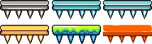
Some platforms may also have spikes underneath them. If you touch the spikes, you will get hit.
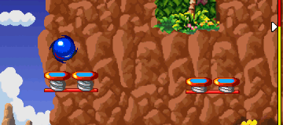
SPRING PLATFORMS:
The spring platforms allow the character to jump even higher.
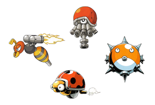
Badniks are robots created by Dr. Eggman. You can defeat a Badnik by jumping towards it.
But be careful not to touch a badnik when the character is not spinning, or else you get hit.

Green hoops allow you to earn more points by passing through them.
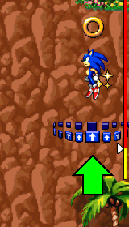
Blue hoops allow you to launch the character high at a fast speed.
Like the green hoops, they also allow you to earn more points by passing through them.
To use a blue hoop, the character must pass through it from below.
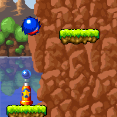
If you land on a platform with a checkpoint on it, you will restart from this platform after losing a life, instead of restarting from the beginning of the stage.
Be careful when you are at your last life. Because if you lost at this point, your game is over and you have to restart from the beginning of the stage to clear it.
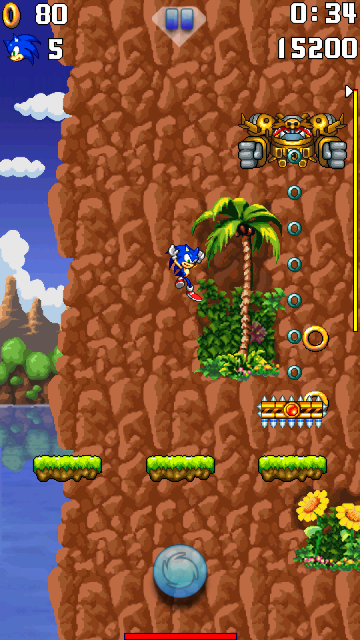
At the end of Act 3 in each zone, Dr. Eggman descends in a flying machine. A life gauge also appears at the bottom of the screen.
You have to defeat Dr. Eggman to clear the stage. Hit the machine while jumping in a ball to attack. If the life gauge is empty, Dr. Eggman's machine is broken and he lives the area.
The machine is equipped either with spikes bars or spikes balls, depending on the zone. Learn the attack patterns to avoid getting hit and counter-attack effectively.
The rings are scattered around in the stages. They are an essentail item to collect and serve multiple purposes.
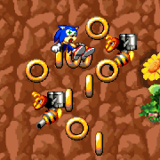
The main use of the rings is to protect the player from damage. When you get hit, you lose 10 rings.
Be careful not to get hit when you have 0 rings, or else you will lose a life.
If you collect 50 or 100 rings, you will earn an extra life.
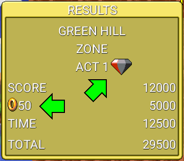
If you clear a stage with at least 50 rings, you can earn an emerald shard.
Collect all emerald shards in the game to unlock the Bonus Zone and end the story.
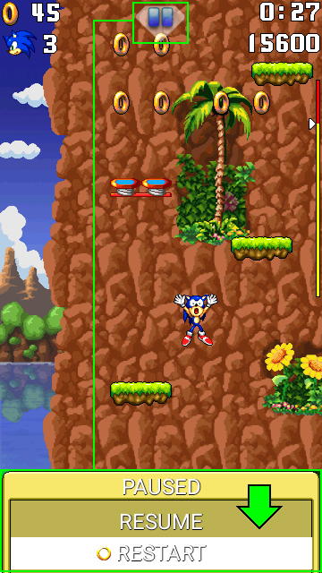
If you lose a life, you will lose all the rings you have collected in a stage and get less chance to earn an emerald shard at the end of the stage.
While losing, you can pause the game and restart the stage from the beginning. Doing so will also preserve your extra lives.